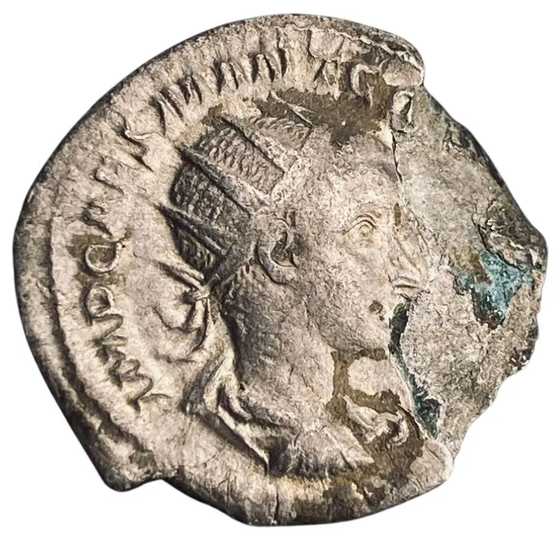

A Fascinante História do Dinheiro: De Moedas Antigas a Cédulas Modernas
Primeiras Moedas
A primeira moeda a ser cunhada oficialmente por um governo foi o estáter lídio, que surgiu por volta do ano 640 a.C. na Anatólia, região que atualmente conhecemos como a Turquia. A moeda em questão traz o selo do rei Alíates da Lídia, e normalmente era cunhada usando uma liga de ouro e prata conhecida como electrum. Isso era essencial para garantir a sua durabilidade, o que ajudou a popularizar seu uso como forma de pagamento
Expansão do uso das moedas
No século III a.C., o uso das moedas se consolidou como a principal forma de troca em várias civilizações. Com a expansão de impérios como o Romano e o Helenístico, as moedas tornaram-se ferramentas essenciais para facilitar o comércio, padronizar economias locais e afirmar a autoridade dos governantes. Nesse período, a cunhagem começou a atingir maior escala, permitindo transações comerciais mais amplas e fortalecendo as relações econômicas entre diferentes regiões.
Primeiras cédulas na China
No século IX, durante a dinastia Tang, surgiram as primeiras cédulas de papel como uma forma de substituto das moedas metálicas, facilitando as transações comerciais em um império que se expandia rapidamente. Essas notas, chamadas de "jiaochao", eram inicialmente utilizadas por mercadores como uma alternativa prática para carregar grandes quantidades de moeda metálica, que se tornava pesada e difícil de transportar. As cédulas foram aprimoradas durante a dinastia Song, no século XI, e começaram a ser emitidas pelo governo chinês, tornando-se um marco na história monetária.
Introdução das cédulas na Europa
No século XVII, a Europa testemunhou a introdução das primeiras cédulas de banco, uma inovação que revolucionaria o sistema financeiro. O primeiro exemplo significativo foi a emissão de notas pelo Banco da Suécia, em 1661. Essas cédulas eram originalmente utilizadas como um meio de crédito, permitindo que os comerciantes e cidadãos realizassem transações sem a necessidade de carregar grandes quantidades de moedas metálicas. A ideia se espalhou rapidamente para outros países europeus, marcando o início da popularização do papel-moeda no continente e o estabelecimento dos bancos centrais como emissores de moeda.
Era das moedas modernas
O século XIX marcou o início da era das moedas modernas, caracterizada pela padronização e pela introdução de novos metais e técnicas de cunhagem. Durante esse período, muitos países adotaram moedas de baixo custo, feitas de materiais como cobre e níquel, o que facilitou ainda mais as transações comerciais. O padrão ouro, que vinculava o valor das moedas ao ouro, foi implementado por várias economias, trazendo estabilidade e confiança ao sistema monetário. Além disso, foi no século XIX que surgiram as primeiras moedas com valor fixo e design padronizado, estabelecendo as bases para o sistema monetário global moderno.
Evolução tecnológica no dinheiro
A evolução tecnológica no dinheiro transformou a forma como realizamos transações ao longo dos séculos. Desde a invenção das primeiras moedas e cédulas, a tecnologia sempre desempenhou um papel crucial na inovação financeira. No século XX e XXI, o dinheiro passou a ser cada vez mais digital, com o surgimento de cartões de crédito, transferências eletrônicas. A digitalização das finanças possibilitou transações instantâneas, facilitando o comércio global e a inclusão financeira.
Era do dinheiro virtual

O século XXI marcou o auge da revolução digital no sistema financeiro, com o dinheiro virtual ganhando destaque. A crescente utilização de moedas digitais, como Bitcoin, Ethereum e outras criptomoedas, alterou o panorama financeiro global, permitindo transações descentralizadas, rápidas e sem a necessidade de intermediários. Além disso, o pagamento por meio de aplicativos e carteiras digitais, como Apple Pay, Google Pay e outras soluções de pagamento móvel, tornou-se comum, facilitando compras e transferências em tempo real.